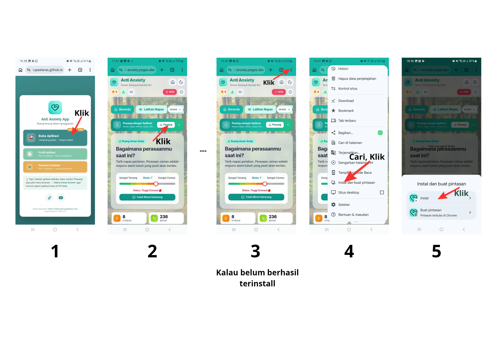

Versi awal 6.5 | Service Worker v12 | Aplikasi PWA — cukup buka link, tanpa unduh file

Kenapa link, bukan APK/ZIP? Anti Anxiety App berbasis PWA. Cukup buka URL di browser — aplikasi langsung jalan. Opsi "Install / Add to Home Screen" bersifat tambahan, bukan syarat wajib. Update otomatis, selalu versi terbaru, aman di Android, iOS, dan Desktop.
AAndroid — Chrome
Buka URL aplikasi di Chrome.
Tunggu banner "Add to Home Screen" muncul.
Jika tidak muncul: menu ⋮ → Install app.
Ketuk Install → ikon muncul di launcher.
Keamanan: Jika muncul "Site not secure" → Details → Proceed, hanya untuk URL resmi.
BiOS — Safari
Buka URL di Safari (wajib Safari, bukan browser lain).
Ketuk ikon Share (kotak dengan panah).
Pilih Add to Home Screen.
Beri nama → ketuk Add.
Keamanan: iOS tidak menampilkan prompt "untrusted" untuk PWA — aman secara default.
CDesktop — Chrome / Edge
Buka URL di Chrome atau Edge.
Klik ikon Install di address bar (ikon monitor dengan panah).
Atau: menu ⋮ → Install Anti Anxiety App.
Klik Install → aplikasi terbuka di jendela sendiri.
Keamanan: Windows SmartScreen → More info → Run anyway, hanya bila sumber terpercaya.
🔧 Troubleshooting Cepat
Tombol install tak muncul: buka menu Pengaturan → Pasang sebagai Aplikasi.
Jika masih tidak muncul, reset pengingat install dari menu yang sama (tautan kecil di bagian bawah).
Ikon tidak muncul di home: restart browser, lalu cek izin storage.
Aplikasi crash / blank: clear data browser, lalu buka ulang link.
🔒 Checklist Keamanan: Selalu akses dari URL resmi (HTTPS). Prompt verifikasi browser adalah fitur perlindungan, bukan error — baca teliti sebelum klik Proceed / Run anyway. Jangan pernah isi data pribadi pada verifikasi tak dikenal. Laporkan link mencurigakan ke admin.
✅ Setelah terpasang: aplikasi mendukung Mode Gelap/Terang, tampilan responsif di semua ukuran layar, dan tetap bisa dibuka offline setelah pemakaian pertama (Service Worker v12). Data tersimpan lokal di perangkat.
📩 Butuh Bantuan?
Hubungi Admin: admin.hidupselaras@gmail.com • Sertakan tangkapan layar bila ada kendala.
Anti Anxiety App • SW v12 • Bug mode gelap (aa_theme) telah diperbaiki • Panduan v1.2